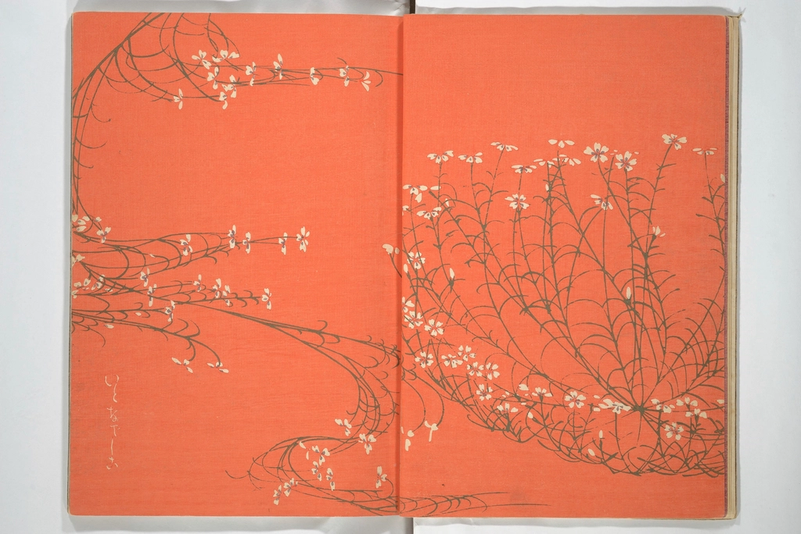
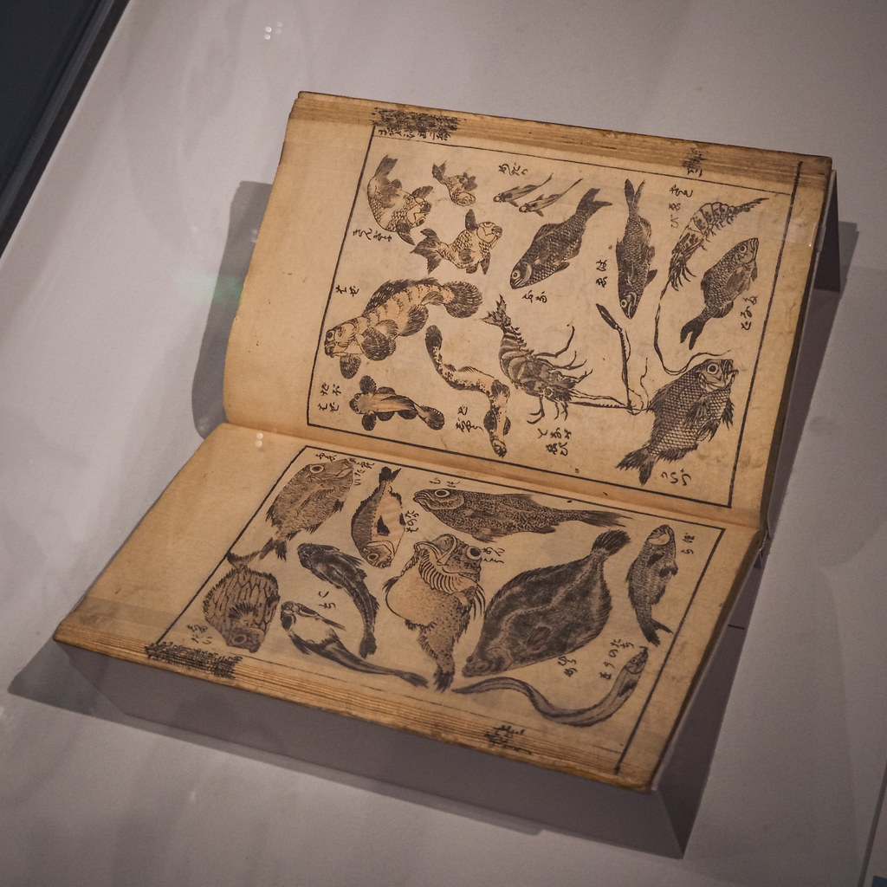
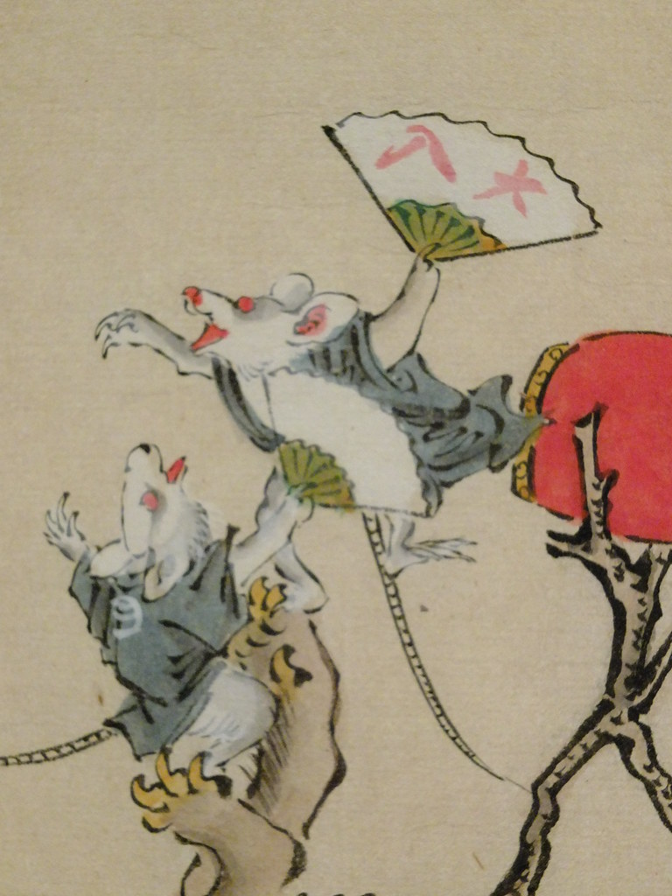
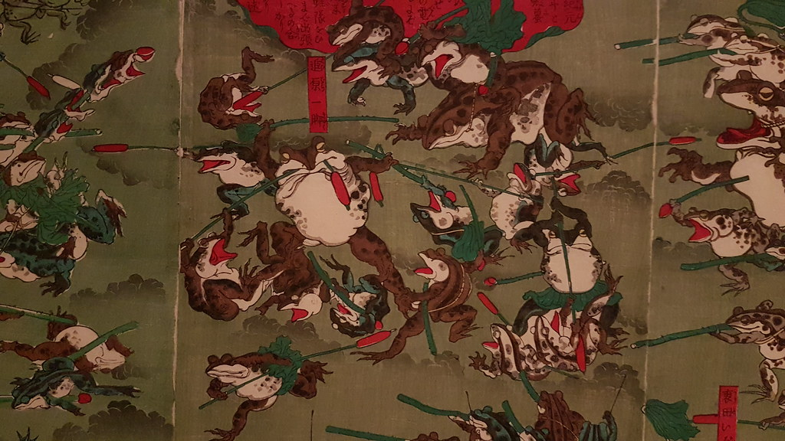
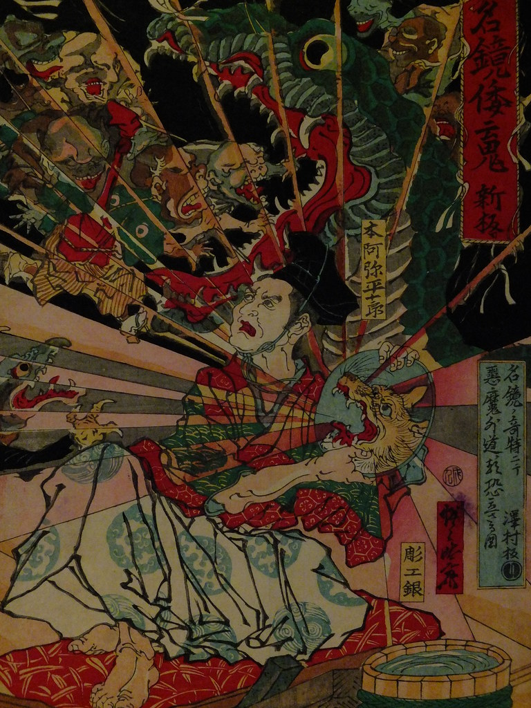
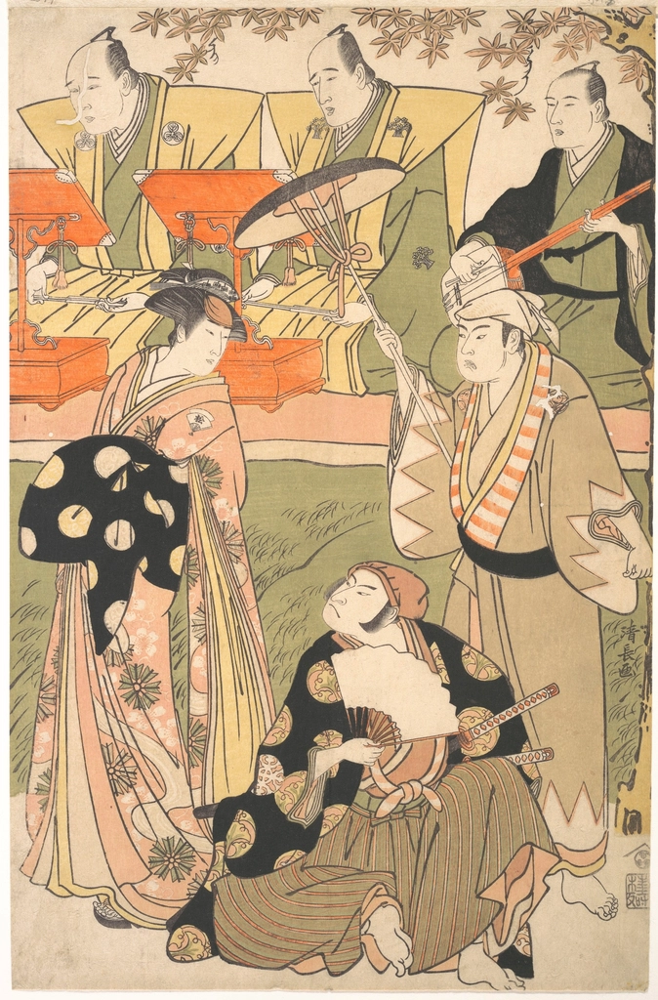
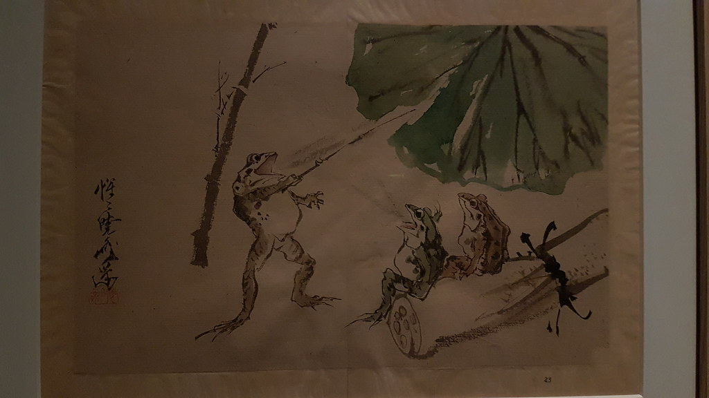

Archive No. 001 · Hồ sơ mở
Mở kho lưu trữ của manga Nhật Bản
Tác giả, tác phẩm, cuộn tranh cổ và những bảo tàng có thật, xếp thành hồ sơ để bạn lần theo từng dấu vết.

Hồ sơ nổi bật
Xem toàn bộ kho lưu trữ
Hokusai Manga 1814-1878
Bộ sách phác thảo 15 tập của Katsushika Hokusai, nơi chữ "manga" xuất hiện trên một ấn phẩm nổi tiếng thời Edo.
Mở hồ sơTezuka Osamu
1928-1989 · Toyonaka, Osaka
Tác giả có ảnh hưởng lớn nhất tới manga hậu chiến, từ truyện dài nhiều trang tới cách dàn khung như phim.
Mở hồ sơ
Kawanabe Kyōsai
1831-1889
Học trường phái Kanō nhưng nổi tiếng với tranh hài hước, yêu quái và động vật nhân hóa.
Ếch, thỏ và khỉ trong cuộn tranh thế kỷ 12
Chōjū-jinbutsu-giga của chùa Kōzan-ji, Kyoto: bốn cuộn tranh mực thường được nhắc tới như một tiền thân xa của manga.
Dòng thời gian manga
Mười mốc có nguồn tham khảo, từ cuộn tranh chùa Kōzan-ji tới bảo tàng manga đầu tiên của Kyoto. Bấm vào mốc để mở hồ sơ.
- Thế kỷ 12-13 Chōjū-jinbutsu-giga Cuộn tranh động vật nhân hóa của chùa Kōzan-ji, Kyoto.
- 1775 Kibyōshi ở Edo Sách bìa vàng đặt lời thoại ngay cạnh nhân vật.
- 1814 Hokusai Manga, tập 1 Tập đầu tiên của bộ sổ vẽ mẫu in tại Nagoya.
- 1862 The Japan Punch Charles Wirgman ra tạp chí biếm họa ở Yokohama.
- 1905 Tokyo Puck Kitazawa Rakuten lập tạp chí biếm họa màu.
- 1946 Sazae-san lên báo Truyện bốn khung của Hasegawa Machiko ra mắt.
- 1947 Shin Takarajima Truyện dài in thành sách do Tezuka Osamu vẽ.
- 1957 Gekiga Tatsumi Yoshihiro đặt tên cho dòng truyện hiện thực.
- 1959 Tạp chí manga tuần Shōnen Magazine và Shōnen Sunday cùng ra mắt.
- 2006 Bảo tàng manga Kyoto Kyoto International Manga Museum mở cửa.
Phía sau trang truyện
Một trang manga in ra là kết quả của nhiều lượt vẽ chồng lên nhau. Đây là bốn công đoạn quen thuộc trong xưởng vẽ, từ bản nháp tới trang hoàn chỉnh.
- 01 Name ネーム Bản phân cảnh thô: chia khung, đặt nhân vật, ghi lời thoại để biên tập viên duyệt.
- 02 Phác chì 下書き Vẽ chì lên giấy bản thảo theo bố cục đã duyệt, chỉnh dáng người và phối cảnh.
- 03 Đi mực ペン入れ Ngòi G-pen cho nét dày mỏng theo lực tay, ngòi tròn cho tóc và chi tiết nhỏ.
- 04 Tông và hoàn thiện トーン Tô mảng đen, dán screentone tạo sắc xám, sửa bằng mực trắng rồi đặt chữ thoại.

"Mỗi trang truyện là một dấu vết lịch sử."
Nền: Battle of the Frogs (1877), tranh khắc gỗ ba tấm thời Minh Trị.
Dấu tích manga tại Nhật Bản
Những bảo tàng và địa điểm có thật, nơi bản thảo, căn phòng vẽ và thư viện truyện vẫn mở cửa cho người tìm đến.
- Kyoto2006 Kyoto International Manga Museum Bảo tàng kiêm thư viện trong ngôi trường tiểu học cũ ở trung tâm Kyoto.
- Takarazuka, Hyōgo1994 Tezuka Osamu Manga Museum Bảo tàng ở thành phố nơi Tezuka Osamu lớn lên.
- Toshima, Tokyo2020 Tokiwa-sō Manga Museum Bản dựng lại căn hộ gỗ nơi một thế hệ mangaka từng sống.
Hồ sơ mới cập nhật
Mọi hồ sơ lịch sử
Lịch sử · 1862
The Japan Punch và ponchi-e
Tạp chí biếm họa ở Yokohama để lại một từ mới cho tranh châm biếm.

Lịch sử · 1775-1806
Kibyōshi, sách bìa vàng thời Edo
Chữ và tranh khắc gỗ nằm chung trên mỗi trang, dành cho người lớn ở Edo.
Lịch sử · 1957
Gekiga, tranh kịch
Tên gọi Tatsumi Yoshihiro đặt cho dòng truyện hiện thực viết cho người trưởng thành.

Giới thiệu
MANGA CHRONICLE là một kho lưu trữ biên tập về văn hóa manga Nhật Bản. Mỗi hồ sơ gom lại một tác giả, một tác phẩm, một giai đoạn hay một địa điểm, kèm bối cảnh và nguồn tham khảo để bạn tự kiểm chứng.
Chúng tôi chỉ ghi lại những gì có thể xác minh, không bịa trích dẫn hay chuyện hậu trường. Ảnh trên trang là tranh, sách khắc gỗ đã thuộc phạm vi công cộng và ảnh công trình có giấy phép mở; chúng tôi không dùng tranh manga, bìa truyện hay nhân vật còn bản quyền.
Đây là bản thử nghiệm. Nội dung các hồ sơ là dữ liệu mẫu, cần được đối chiếu nguồn trước khi xuất bản chính thức.
Ban biên tập MANGA CHRONICLE